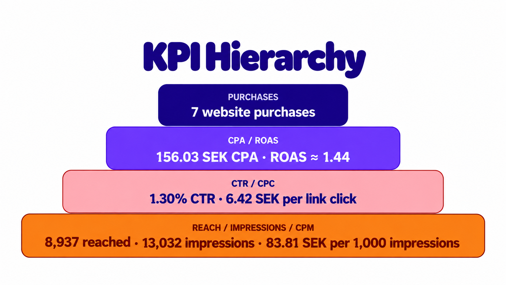

Awareness
We used pregnancy-related visuals, relatable hooks and clear messaging to grab attention and create immediate recognition within our target audience.
.png)
A three-day Meta Ads campaign.

THE CHALLENGE
Our brief from Aroma Roast was to test which advertising concepts could drive purchases through Meta Ads.
Our group focused on the pregnancy-related need for a caffeine-free alternative, targeting pregnant women aged 28–35.
We wanted the audience to recognize themselves in the campaign and see that a familiar coffee moment could still be part of everyday life.
THE STRATEGY
.png)
We used pregnancy-related visuals, relatable hooks and clear messaging to grab attention and create immediate recognition within our target audience.
We focused on showing that the coffee ritual could continue during pregnancy by choosing a caffeine-free alternative.
We aimed to turn interest into purchases through clear product communication and a direct call to action.
THE RESULTS

THE CREATIVE
We focused on clear hooks that immediately helped pregnant women recognize themselves as the target audience. Our ads showcased the products and positioned caffeine-free coffee as an alternative that allows them to keep enjoying their coffee rituals.
.png)
1 purchase
ROAS 5.21
CPA 34.18 SEK
ABOVE BREAK-EVEN ROAS.png)
1 purchase
ROAS 2.71
CPA 103.64 SEK
.png)
2 purchases
ROAS 1.69
CPA 105.48 SEK
Reach 2,432
.png)
2 purchases
ROAS 1.29
CPA 182.57 SEK
Reach 4,183
KEY TAKEAWAYS
Pregnancy-related visuals and familiar coffee moments helped make the message feel relevant to our target audience.
Evaluating an ad means looking at multiple KPIs. The ad with the most purchases isn’t necessarily the most profitable. By comparing metrics like CPA and ROAS, we can better understand what actually drives results.
Performance Marketing is about continuous improvement. By analyzing results, testing different creatives and optimizing based on data, we can make better decisions and improve future campaigns.